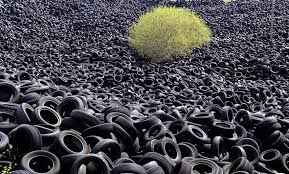

Reciclagem de Borracha

Introdução
Em 1845, Charles Goodyear inventou o pneu. Inicialmente, a borracha utilizada era uma espécie de goma “grudenta”, usada principalmente para impermeabilizar tecidos e com sério risco de dissolução quando exposta a temperaturas elevadas. De lá pra cá, com a necessidade de segurança e qualidade, o desenvolvimento do pneu como um artefato seguro e confiável passou por diversas modificações, incluindo a invenção de uma espécie diferente de borracha: a borracha sintética.
Em seu estado natural, a borracha provém da seiva de seringueira (árvore originalmente nativa da Amazônia). Já a borracha sintética é feita a partir do petróleo, com características muito semelhantes à borracha natural, exceto pela resistência inferior ao calor. No Brasil, de toda a borracha fabricada, 70% é destinada exclusivamente para a produção de pneus. Os outros 30% são destinados a produção de insumos, como: calçados, instrumentos cirúrgicos, preservativos etc.
Processo de Reciclagem
O pneu é o principal objeto descartado a partir da borracha. Composto por 30% de borracha sintética, 10% de borracha natural e os outros 60% de aço e tecidos de lona, o pneu é um fenômeno se considerarmos seus números: 2 milhões de pneus novos são fabricados todos os dias, somando 730 milhões de pneus fabricados ao ano no mundo todo. Já o descarte é também impressionante, são 800 milhões de pneus descartados anualmente pelo mundo, sendo que, só no Brasil são descartados 17 milhões de pneus anualmente.
Com base nesses números, a reciclagem de pneus e borracha torna-se primordial, além da eficiente contribuição para o meio ambiente, visto que não se sabe exatamente quanto tempo os pneus demoram para se decompor. No caso dos pneus, dentre os muitos métodos de reciclagem, destaca-se a separação da borracha dos demais itens por meio de cortes, em seguida o processo de purificação em peneiras é feito. As lascas são então moídas e colocadas em processo de digestão em vapor d’ água, juntamente com produtos químicos capazes de desvulcanizar a borracha.
Se comparadas à borracha original, a borracha reciclada apresenta características inferiores, servindo para coberturas de áreas de lazer, quadras poliesportivas, tapetes de automóveis, colas, câmaras de ar, solados de calçados, matérias de limpeza, móveis, dentre outros.
Importância da Reciclagem
É importante lembrar que o pneu também pode ser recauchutado, processo no qual são adicionadas novas camadas de borracha no pneu já “careca”. Esse processo é extremamente benéfico e econômico, pois estende a vida útil do pneu em 40% e economiza 80% de energia. Outra função importante dado ao pneu velho é sua utilização como geração de energia no lugar do carvão.